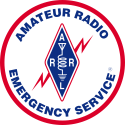
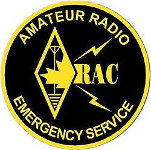

Amateur Radio Emergency Service
This article has multiple issues. Please help improve it or discuss these issues on the talk page. (Learn how and when to remove these messages)
|
{kind=link}
|  In United States | |
|  In Canada | |
| Abbreviation | ARES |
|---|---|
| Type | Non-profit organization |
| Purpose | Emergency response |
Region served | Canada, United States |
| Affiliations | Radio Amateurs of Canada, American Radio Relay League |
| Website | (via ARRL) |
{kind=link}
{kind=link}
In the United States and Canada, the Amateur Radio Emergency Service (ARES) is a corps of trained amateur radio operator volunteers organized to assist in public service and emergency communications. It is organized and sponsored by the American Radio Relay League and the Radio Amateurs of Canada.
Communication failures have been a defining part of natural disasters and even some human-generated events. Amateur radio provides a means of communication "when all else fails".
Historical operations
This section relies largely or entirely on a single source. (June 2010) |
Amateur radio operators belonging to ARES (and its predecessor, the Amateur Radio Emergency Corps) have responded to local and regional disasters since the 1930s, including the attacks of September 11, 2001, and the category 5 storms Hurricane Katrina[1] and Hurricane Michael.[2] During the Katrina event, more than one thousand ARES volunteers assisted in the aftermath and provided communications for the American Red Cross, The Salvation Army, and other individuals related to the relief effort.[1] After Katrina Hancock County, Mississippi, had lost all contact with the outside world, except through ARES operators who served as 911 dispatchers and message relayers.[3]
ARES has deployed for a variety of other emergencies and disasters, including the 2003 North America blackout.[4] The blackout covered a wide geographical area of North America. In the United States its scope included Cleveland, Detroit, and New York City. Landline telephones and cell phone systems were overloaded and amateur ability to operate off the grid was put to the test. On Long Island in New York many pieces of health and welfare traffic were passed on VHF and HF nets. Because some television and radio stations had gone off the air amateurs helped fill the lack of information.[4] This was not the first time that amateur radio operators assisted during a blackout in New York City. On a warm evening of July 13, 1977, lightning caused a power outage across the city and most of its suburbs. Radio operators started communication nets on simplex and on a repeater located in the Chrysler Building.[5]
Organizational structure
ARES groups are volunteer amateur radio operators who come together for the common purpose of providing emergency and/or auxiliary communications service to public safety and public service organizations. Most individual ARES units are autonomous and operate locally. Although the Amateur Radio Emergency Service is a program (and trademark) of the American Radio Relay League (ARRL) in the U.S., the structure is more supportive than directive in nature, providing mostly for mutual aid in the event of large-scale emergencies. As long as local units are operating in the best interests of Amateur Radio in general and the ARRL in particular, intervention from the national organization is minimal. The government expresses little governance of ARES (other than the FCC regulations - 47 CFR Part 97 - which regulate all of Amateur Radio) and local authorities only passively regulate ARES groups by way of formal understandings.[6]
ARES groups are generally organized by city or county and are made up of volunteers from the local area. The only requirements to join ARES are a willingness to serve and a valid amateur radio license.[6]
Groups are organized locally by the person holding the position of Emergency Coordinator (EC). The EC maintains full responsibility for organizing the local groups and serving as their leader during operations. The EC is an ARRL or RAC member, and is generally the point of contact for those wishing to perform Emergency Communications in their local area. They may appoint one or several AECs (Assistant Emergency Coordinator) to oversee certain geographical areas, or they may appoint by function such as the SKYWARN severe weather spotting network, Net Managing, Training Direction, or Public Information, or maybe a mix of the above (i.e. whatever works locally). Some members may be appointed as Official Emergency Stations and are trained to serve specific duties such as being a net controller during emergencies.
The next higher level of coordination is the optional District Emergency Coordinator (DEC). This person coordinates the operation of several local county or city ARES groups and reports to the Section Emergency Coordinator in those sections where the span of control would otherwise be too large. A DEC may have one or more Assistant District Emergency Coordinators serving them.
Leading the structure is the Section Emergency Coordinator, or SEC. This person is appointed by the elected Section Manager and is responsible for emergency communications in their section. An SEC may have one or more Assistant SECs serving to assist them. In the U.S., a Section is one of 71 geographic administrative areas of the ARRL. It is either a state or in more densely populated areas of the U.S., a portion of a state.
In Canada, the ARES is coordinated overall by the Radio Amateurs of Canada (RAC) Field Services Organization which has eight (8) Sections: Alberta, British Columbia/Yukon, Manitoba, Maritimes (consisting of Prince Edward Island, Nova Scotia, and New Brunswick), Newfoundland/Labrador, Ontario, Quebec, and Saskatchewan. As is the case in the U.S., each Section is managed by an elected Section Manager.
In Canada, the ARES logo is a registered trademark of the Radio Amateurs of Canada Inc. (RAC).
Mutual assistance
ARES in the U.S. has Memorandums of Understanding with organizations including the American Red Cross, National Weather Service, Department of Homeland Security, Citizen Corps, Association of Public-Safety Communications Officials-International, National Communications System, National Association of Radio and Telecommunications Engineers Inc., Salvation Army, Society of Broadcast Engineers, Quarter Century Wireless Association Inc. and REACT International Inc.
Often these memorandums illustrate a common and united sense of purpose between ARES and another organization. However, Memorandums of Understanding with the American Red Cross, the National Weather Service, the Salvation Army and others lay out the general guidelines for organization and coordination between agencies in times of emergency.
ARES of the Radio Amateurs of Canada have MOUs with the Canadian Red Cross Society and PERCS, the British Columbia Provincial Emergency Radio Communication Service.
Alternative groups
Frequently, members of local ARES groups in the U.S. are registered with local government Emergency Management agencies to permit operations under the RACES rules, if ever needed. This allows continuation of operation during times of declared emergency when normal amateur operations might be prohibited. Today, ARES has operators and officials at local, county, and state levels, and most potential RACES operations are generally integrated within ARES organizations.[7]
A few U.S. Amateur Radio emergency communications groups have decided, for one reason or another, not to affiliate with the ARRL. Some such groups in Canada have elected not to offer their services under the Radio Amateurs of Canada (RAC) banner. However, their essential purpose remains the same and, in times of need, they often work side-by-side with ARES groups. Radio clubs independent of the ARRL or the RAC and ARES also participate in emergency communications activities in some areas.
Many ARES operators are also part of storm spotter networks, e.g., SKYWARN (a program organized by the U.S. National Weather Service) and CANWARN (coordinated by Environment Canada).
In many cases, the ARES Emergency Coordinator for a county coordinates all local Amateur Radio emergency and disaster communications activity.
See also
- AREC (Amateur Radio Emergency Communications), New Zealand
- CFARS (Canadian Forces Affiliate Radio System), Canada
- Civil defense in the United States
- DARES (Dutch Amateur Radio Emergency Service), The Netherlands
- MARS (Military Auxiliary Radio System), United States
- National Incident Management System
- NetHope
- RACES (Radio Amateur Civil Emergency Service), United States
- RAYNET (Radio Amateurs Emergency Network), United Kingdom
- Salvation Army Team Emergency Radio Network (SATERN), US
- Wireless Institute Civil Emergency Network (Australia)
References
- ^ a b "ARRL president submits congressional testimony on hams' Katrina response", The ARRL Letter, ARRL, September 2005, retrieved 2010-06-05
- ^ "ARRL activities with Hurricane Michael", The ARRL ARES E-Letter, ARRL, November 2018, retrieved 2019-05-14
- ^ Rick Palm. "ARES E-Letter for September 22, 2005." The American Radio Relay League. September 22, 2005. Retrieved on 2010-04-14.
- ^ a b Rick Lindquist, N1RL (October 2003), Hams a Bright Spot during Power Blackout, QST, pp. 79–80
{{citation}}: CS1 maint: numeric names: authors list (link) - ^ John Edwards, WB2IBE (October 1977), Amateurs Respond To NYC Blackout, QST, p. 95
{{citation}}: CS1 maint: numeric names: authors list (link) - ^ a b Wilkosz 2004, p. 156
- ^ Wilkosz 2004, p. 157
Bibliography
- Townsend, Anthony M.; Moss, Mitchell L. (April 2005), Telecommunications Infrastructure In Disasters: Preparing Cities for Crisis Communications (PDF), Center for Catastrophe Preparedness and Response and Robert F. Wagner Graduate School of Public Service
- Wilkosz, Warren R. (2004), Amateur Radio Emergency Service, University of Illinois College of Law
- ARRL, ARRL (2015), Amateur Radio Emergency Service: Are Communication Lines The Missing Link To Homeland Security? (PDF), Amateur Radio Relay League , archived from the original (PDF) on 2010-06-13, retrieved 2010-06-06